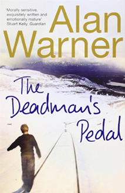

The Deadman's Pedal

THE DEADMAN'S PEDAL (2012)
For 16-year-old Simon Crimmons there is not a lot to do. Going nowhere, fed up with school, he leaves to work as a driver on the trains. That summer he is introduced to a world of grown-up glamour, strikes and girlfriends. When Simon falls for the ethereal, aristocratic Varie, he finds freedom and adventure but will it be at a price? Too ‘posh’ for the railways, too ‘working class’ for Varie, Simon must navigate what it means to be a man as his world is turned upside down.
PRAISE FOR THE DEADMAN'S PEDAL
- A delight: a boisterous, kindly, deep, sweet romp of a thing (Scotsman)
- Absolutely beautiful... As far as I'm concerned he's emerging as the William Faulkner of British fiction: somebody who's created a body of work that has not only animated a language but a period and a place... He has this incredible talent (Andrew O'Hagan)
- This is the best Scottish fiction since Lanark (Scottish Review of Books)
- Morally sensitive, exquisitely written and emotionally mature (Guardian)
- If you still haven’t read it from last year, Alan Warner’s The Deadman’s Pedal was out in paperback in this. Read it (Janice Galloway, Scotsman)